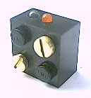
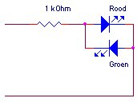
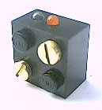
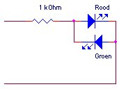

Robbert
Mattijs
van Mattijs, Stef en Robbert Mientki
januari 2001
| Lego-Knex
Robbert Mattijs |
Lego LED-stenen
van Mattijs, Stef en Robbert Mientki januari 2001 |
   |
Simpele rood/groen LED,
afhankelijk van de polariteit van de spanning, brandt de rode of de groene LED, de helderheid kan met "SET POWER" worden ingesteld. Voor een grotere helderheid van de LED's mag de weerstand verlaagd worden tot 250 Ohm (dit geeft een LED-stroom van 20 mA, hetgeen de meeste LED's aankunnen). Meer details: connector |
|
|
Steve Putz uses his LED wires direct as lego contacts. |